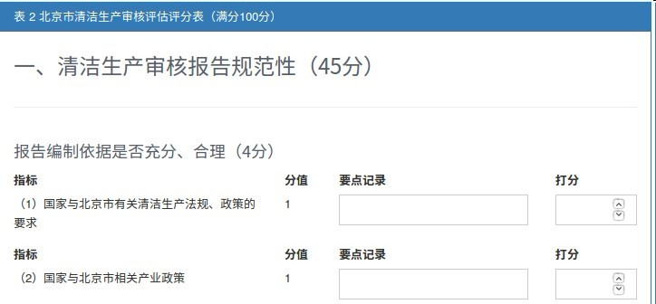
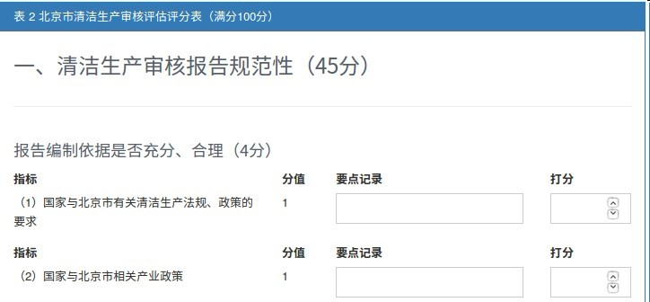

清洁生产管理系统填报使用说明
2.3 复审会
专家评分。

点击“保存”，“下载”报表，专家签字确认后，扫描文件。
点击“下一步”，“选择文件”，勾选“我保证上传文件的真实性”，点击“提交”。

“下一步”后，所有信息不能更改。
专家评分。

点击“保存”，“下载”报表，专家签字确认后，扫描文件。
点击“下一步”，“选择文件”，勾选“我保证上传文件的真实性”，点击“提交”。
“下一步”后，所有信息不能更改。